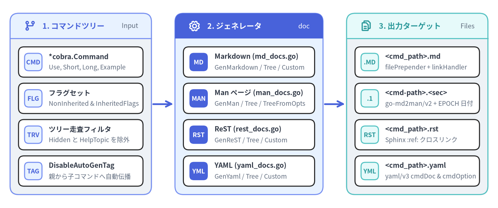
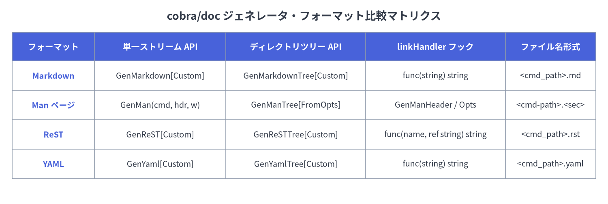

08. ドキュメント自動生成 (cobra/doc)
github.com/spf13/cobra/doc パッケージは、*cobra.Command ツリー（コマンドの概要、詳細説明、使用例、ローカルフラグ、継承された永続フラグ、親子関係）を走査し、Markdown、Man ページ (roff)、ReStructuredText (ReST)、YAML の 4 種類のフォーマットでリファレンスドキュメントを自動生成します。

Source Code
from drawlib.canvas import save, setup
from drawlib.icons import phosphor
from drawlib.lines import line
from drawlib.smartarts import CardList, Panel
from drawlib.styles import Styles
setup(width=148, height=62, dpi=150)
# 1. Left Panel: Command Tree & Hooks
p1 = Panel(
"1. コマンドツリー",
"Input",
style=Styles.Neutral,
header_style=Styles.PrimaryNeutral,
text_style=Styles.PrimaryBold.patch(text_size=11.0),
description_style=Styles.Muted.patch(text_size=9.5),
header_height=7.5,
icon=phosphor.git_branch,
icon_style=Styles.PrimaryBold,
)
p1.draw(xy=(3, 4), width=42, height=54)
ix1, iw1, ih1 = p1.get_content_box(xy=(3, 4), width=42, height=54, padding=(2.5, 2.5))
cl1 = CardList(
style=Styles.White,
text_style=Styles.DarkBold.patch(text_size=10.0),
description_style=Styles.Muted.patch(text_size=9.2),
badge_shape="rounded_rect",
badge_style=Styles.PrimaryNeutral,
badge_text_style=Styles.PrimaryBold.patch(text_size=9.2),
spacing=1.8,
)
cl1.add("*cobra.Command", "Use, Short, Long, Example", badge_text="CMD")
cl1.add("フラグセット", "NonInherited & InheritedFlags", badge_text="FLG")
cl1.add("ツリー走査フィルタ", "Hidden と HelpTopic を除外", badge_text="TRV")
cl1.add("DisableAutoGenTag", "親から子コマンドへ自動伝播", badge_text="TAG")
cl1.draw(xy=ix1, width=iw1, height=ih1)
line((45.5, 31), (51.5, 31), arrow_head="->", style=Styles.PrimaryBold)
# 2. Middle Panel: 4 Format Generators
p2 = Panel(
"2. ジェネレータ",
"doc",
style=Styles.PrimaryNeutral,
header_style=Styles.PrimaryFlat,
text_style=Styles.WhiteBold.patch(text_size=11.0),
description_style=Styles.White.patch(text_size=9.5),
header_height=7.5,
icon=phosphor.gear,
icon_style=Styles.WhiteBold,
)
p2.draw(xy=(52, 4), width=44, height=54)
ix2, iw2, ih2 = p2.get_content_box(xy=(52, 4), width=44, height=54, padding=(2.5, 2.5))
cl2 = CardList(
style=Styles.White,
text_style=Styles.DarkBold.patch(text_size=10.0),
description_style=Styles.Muted.patch(text_size=9.2),
badge_shape="rounded_rect",
badge_style=Styles.PrimaryFlat,
badge_text_style=Styles.WhiteBold.patch(text_size=9.2),
spacing=1.8,
)
cl2.add("Markdown (md_docs.go)", "GenMarkdown / Tree / Custom", badge_text="MD")
cl2.add("Man ページ (man_docs.go)", "GenMan / Tree / TreeFromOpts", badge_text="MAN")
cl2.add("ReST (rest_docs.go)", "GenReST / Tree / Custom", badge_text="RST")
cl2.add("YAML (yaml_docs.go)", "GenYaml / Tree / Custom", badge_text="YML")
cl2.draw(xy=ix2, width=iw2, height=ih2)
line((96.5, 31), (102.5, 31), arrow_head="->", style=Styles.PrimaryBold)
# 3. Right Panel: Output Streams & Files
p3 = Panel(
"3. 出力ターゲット",
"Files",
style=Styles.Neutral,
header_style=Styles.SecondaryNeutral,
text_style=Styles.SecondaryBold.patch(text_size=11.0),
description_style=Styles.Muted.patch(text_size=9.5),
header_height=7.5,
icon=phosphor.files,
icon_style=Styles.SecondaryBold,
)
p3.draw(xy=(103, 4), width=42, height=54)
ix3, iw3, ih3 = p3.get_content_box(xy=(103, 4), width=42, height=54, padding=(2.5, 2.5))
cl3 = CardList(
style=Styles.White,
text_style=Styles.DarkBold.patch(text_size=10.0),
description_style=Styles.Muted.patch(text_size=9.2),
badge_shape="rounded_rect",
badge_style=Styles.SecondaryNeutral,
badge_text_style=Styles.SecondaryBold.patch(text_size=9.2),
spacing=1.8,
)
cl3.add("<cmd_path>.md", "filePrepender + linkHandler", badge_text=".MD")
cl3.add("<cmd-path>.<sec>", "go-md2man/v2 + EPOCH 日付", badge_text=".1")
cl3.add("<cmd_path>.rst", "Sphinx :ref: クロスリンク", badge_text="RST")
cl3.add("<cmd_path>.yaml", "yaml/v3 cmdDoc & cmdOption", badge_text="YML")
cl3.draw(xy=ix3, width=iw3, height=ih3)
save()
フォーマット別ジェネレータ比較マトリクス#
github.com/spf13/cobra/doc のすべてのジェネレータは、出力処理の前に cmd.InitDefaultHelpCmd() および cmd.InitDefaultHelpFlag() を呼び出すため、--help フラグも自動的にオプション一覧へ含まれます。また、*Tree* 系関数は cmd.Commands() を再帰的に走査し、!c.IsAvailableCommand() || c.IsAdditionalHelpTopicCommand() に該当するサブコマンドをスキップします。

Source Code
from drawlib.canvas import save, setup
from drawlib.smartarts import Table
from drawlib.styles import Colors, Styles
from drawlib.text import text
setup(width=148, height=50, dpi=150)
text(
(74, 46),
"cobra/doc ジェネレータ・フォーマット比較マトリクス",
style=Styles.DarkBold.patch(text_size=13.0),
)
tbl = Table(
cell_style=Styles.White,
text_style=Styles.Dark.patch(text_size=9.5),
header_cell_style=Styles.PrimaryFlat,
header_text_style=Styles.WhiteBold.patch(text_size=10.0),
border_style=Styles.MutedThin,
)
rows = [
["フォーマット", "単一ストリーム API", "ディレクトリツリー API", "linkHandler フック", "ファイル名形式"],
["Markdown", "GenMarkdown[Custom]", "GenMarkdownTree[Custom]", "func(string) string", "<cmd_path>.md"],
["Man ページ", "GenMan(cmd, hdr, w)", "GenManTree[FromOpts]", "GenManHeader / Opts", "<cmd-path>.<sec>"],
["ReST", "GenReST[Custom]", "GenReSTTree[Custom]", "func(name, ref string) string", "<cmd_path>.rst"],
["YAML", "GenYaml[Custom]", "GenYamlTree[Custom]", "func(string) string", "<cmd_path>.yaml"],
]
tbl.set_style_cell_evenodd(
even_color=Colors.Light,
even_text_style=Styles.Dark.patch(text_size=9.5),
odd_color=Colors.White,
odd_text_style=Styles.Dark.patch(text_size=9.5),
)
tbl.set_style_cell_header(
background_color=Colors.Primary,
text_style=Styles.WhiteBold.patch(text_size=10.0),
)
tbl.set_style_cell(
background_color=Colors.Light,
text_style=Styles.PrimaryBold.patch(text_size=9.5),
rows=[1, 2, 3, 4],
columns=[0],
)
tbl.draw_flexible(
xy=(3, 42),
column_widths=[20, 32, 34, 34, 22],
row_heights=[7.0, 7.2, 7.2, 7.2, 7.2],
data=rows,
align="top_left",
)
save()
funcGenMarkdown (doc/md_docs.go)#
package doc
func GenMarkdown(cmd *cobra.Command, w io.Writer) error
単一の *cobra.Command の Markdown ドキュメントを生成し、w に書き込みます。内部的には GenMarkdownCustom(cmd, w, func(s string) string { return s }) を呼び出します。
出力される Markdown セクション構成#
## <cmd.CommandPath()>および直下にcmd.Short。### Synopsis—cmd.Long（未設定時はcmd.Short）、およびcmd.Runnable()が真の場合はコードブロック内のcmd.UseLine()。### Examples— コードブロック内のcmd.Example（設定されている場合）。### Options—cmd.NonInheritedFlags().FlagUsages()（非継承フラグ一覧）。### Options inherited from parent commands—cmd.InheritedFlags().FlagUsages()（親から継承したフラグ一覧）。### SEE ALSO— 親コマンドおよび利用可能な全サブコマンド（CommandPath()の辞書順）へのリンク一覧（[name](linkHandler(cname + ".md")) - short）。- 自動生成フッター —
cmd.DisableAutoGenTagがfalseの場合、末尾に###### Auto generated by spf13/cobra on <DD-Mon-YYYY>を出力。
funcGenMarkdownCustom (doc/md_docs.go)#
func GenMarkdownCustom(cmd *cobra.Command, w io.Writer, linkHandler func(string) string) error
cmd の Markdown ドキュメントを w に出力し、SEE ALSO セクション内のリンク先ファイル名（例: "mycli_serve.md"）をすべて linkHandler 関数に通して変換します。
funcGenMarkdownTree (doc/md_docs.go)#
func GenMarkdownTree(cmd *cobra.Command, dir string) error
cmd ツリー内の各コマンドに対して 1 ファイルずつ .md ファイルを生成し、ディレクトリ dir に保存します。ファイル名は cmd.CommandPath() のスペースをアンダースコア（_）に置換したものになります（例: mycli sub -> mycli_sub.md）。
funcGenMarkdownTreeCustom (doc/md_docs.go)#
func GenMarkdownTreeCustom(cmd *cobra.Command, dir string, filePrepender, linkHandler func(string) string) error
2 つのコールバック関数を使って、静的サイトジェネレータ（Hugo、Docusaurus、MkDocs など）向けにカスタマイズされた .md ファイル群を dir に再帰生成します。
filePrepender(filename string) string: 出力先ファイルのフルパス（例:"/docs/mycli_serve.md"）を受け取り、Markdown 本体の先頭に挿入する文字列（YAML / TOML フロントマターなど）を返します。linkHandler(name string) string: デフォルトのリンク先ファイル名（例:"mycli_serve.md"）を受け取り、### SEE ALSOで使用するカスタム URL を返します。
実装例: Hugo 用 YAML フロントマター付き Markdown ツリーの生成#
package main
import (
"fmt"
"path/filepath"
"strings"
"github.com/spf13/cobra"
"github.com/spf13/cobra/doc"
)
func generateHugoDocs(rootCmd *cobra.Command, outDir string) error {
rootCmd.DisableAutoGenTag = true
filePrepender := func(filename string) string {
base := filepath.Base(filename)
name := strings.TrimSuffix(base, filepath.Ext(base))
title := strings.ReplaceAll(name, "_", " ")
return fmt.Sprintf("---\ntitle: %q\nslug: %q\n---\n\n", title, name)
}
linkHandler := func(name string) string {
base := strings.TrimSuffix(name, filepath.Ext(name))
return "/cli/" + strings.ToLower(base) + "/"
}
return doc.GenMarkdownTreeCustom(rootCmd, outDir, filePrepender, linkHandler)
}
structGenManHeader (doc/man_docs.go)#
type GenManHeader struct {
Title string
Section string
Date *time.Time
Source string
Manual string
}
GenMan、GenManTree、GenManTreeFromOpts で出力される Unix man ページの .TH ヘッダーメタデータを定義します。未指定のフィールドは fillHeader により自動補完されます。
| フィールド | 未指定 / nil 時のデフォルト値 |
.TH マクロでの役割 |
|---|---|---|
Title |
cmd.CommandPath() を大文字化しスペースを \- に置換 |
Man ページタイトル（左右ヘッダー） |
Section |
"1"（ユーザーコマンド） |
セクション番号（および GenManTree の拡張子） |
Date |
SOURCE_DATE_EPOCH 環境変数（未設定時は time.Now() の "Jan 2006"） |
中央フッターの日付 |
Source |
"Auto generated by spf13/cobra" |
左フッターのソース表記 |
Manual |
"" |
中央ヘッダーのマニュアル名 |
[!TIP]
SOURCE_DATE_EPOCHによる再現可能ビルド (Reproducible Builds):header.Dateがnilの場合でも、環境変数SOURCE_DATE_EPOCHに Unix タイムスタンプが設定されていれば、strconv.ParseInt(epoch, 10, 64)でパースしたtime.Unix(unixEpoch, 0)が使用されます。
structGenManTreeOptions (doc/man_docs.go)#
type GenManTreeOptions struct {
Header *GenManHeader
Path string
CommandSeparator string
}
GenManTreeFromOpts に渡す設定構造体です。
Header:GenManHeaderのテンプレートへのポインタ（サブコマンドごとにTitleを再生成するため内部でコピーされます）。Path:<basename>.<Section>ファイルを出力するディレクトリパス。CommandSeparator: ファイル名でコマンド階層を連結する区切り文字（GenManTreeでは"-"が設定されます）。
funcGenMan (doc/man_docs.go)#
func GenMan(cmd *cobra.Command, header *GenManHeader, w io.Writer) error
単一コマンド cmd の Unix roff 形式の Man ページを生成し、w に書き込みます。header == nil の場合は空の &GenManHeader{} が自動補完されます。内部で中間 Markdown（NAME、SYNOPSIS、DESCRIPTION、OPTIONS、OPTIONS INHERITED FROM PARENT COMMANDS、EXAMPLE、SEE ALSO、HISTORY）を組み立て、github.com/cpuguy83/go-md2man/v2/md2man.Render で roff にコンパイルします。
funcGenManTree & func GenManTreeFromOpts (doc/man_docs.go)#
func GenManTree(cmd *cobra.Command, header *GenManHeader, dir string) error
func GenManTreeFromOpts(cmd *cobra.Command, opts GenManTreeOptions) error
cmd とすべての利用可能なサブコマンドに対して roff 形式の Man ページファイルを再帰的に生成します。
GenManTree(cmd, header, dir)はGenManTreeFromOpts(cmd, GenManTreeOptions{Header: header, Path: dir, CommandSeparator: "-"})のラッパーです。- 出力ファイル名は
cmd.CommandPath()のスペースをopts.CommandSeparator（"-"）に置換し、末尾に.+header.Section（既定で.1、例:mycli-completion-zsh.1）を付与したものになります。
header := &doc.GenManHeader{
Title: "MYCLI",
Section: "1",
Source: "MyCLI v1.10.2",
Manual: "MyCLI User Manual",
}
if err := doc.GenManTree(rootCmd, header, "./man/man1"); err != nil {
log.Fatal(err)
}
funcGenReST & func GenReSTCustom (doc/rest_docs.go)#
func GenReST(cmd *cobra.Command, w io.Writer) error
func GenReSTCustom(cmd *cobra.Command, w io.Writer, linkHandler func(string, string) string) error
単一コマンド cmd の ReStructuredText（.rst）ドキュメントを生成し、w に書き込みます。
- ファイル先頭に Sphinx 参照アンカー
.. _<cmd_path_underscored>:を出力します。 GenReSTCustomのlinkHandlerはfunc(name, ref string) stringの 2 引数を取る点に注意してください（nameは"<cname> - <short>"、refはアンダースコア区切りの参照名"mycli_serve"）。GenReSTで使われるdefaultLinkHandlerは、Sphinx のクロスリファレンス形式* :ref:`<name> <<ref>>`を返します。
funcGenReSTTree & func GenReSTTreeCustom (doc/rest_docs.go)#
func GenReSTTree(cmd *cobra.Command, dir string) error
func GenReSTTreeCustom(cmd *cobra.Command, dir string, filePrepender func(string) string, linkHandler func(string, string) string) error
cmd とすべての利用可能なサブコマンドに対して <cmd_path_underscored>.rst ファイルをディレクトリ dir 内に再帰生成します。
funcGenYaml & func GenYamlCustom (doc/yaml_docs.go)#
func GenYaml(cmd *cobra.Command, w io.Writer) error
func GenYamlCustom(cmd *cobra.Command, w io.Writer, linkHandler func(string) string) error
cmd のメタデータとフラグ定義を go.yaml.in/yaml/v3 を用いて構造化 YAML にシリアライズし、w に書き込みます。
出力される YAML スキーマ (cmdDoc & cmdOption)#
| YAML キー | 型 | 取得元 |
|---|---|---|
name |
string |
cmd.CommandPath() |
synopsis |
string,omitempty |
cmd.Short |
description |
string,omitempty |
cmd.Long |
usage |
string,omitempty |
cmd.UseLine()（cmd.Runnable() が真の場合のみ） |
options |
[]cmdOption,omitempty |
cmd.NonInheritedFlags()（name, shorthand, default_value, usage） |
inherited_options |
[]cmdOption,omitempty |
cmd.InheritedFlags()（name, shorthand, default_value, usage） |
example |
string,omitempty |
cmd.Example |
see_also |
[]string,omitempty |
親コマンドおよびソート済みサブコマンドの "<CommandPath> - <Short>" 配列 |
[!NOTE]
GenYamlCustomおよびGenYamlTreeCustomはGenMarkdown*との API 対称性のためにlinkHandler func(string) string引数を受け取りますが、doc/yaml_docs.goの内部実装ではsee_alsoに直接"<CommandPath> - <Short>"を格納し、自動生成フッタータグも出力しません。
funcGenYamlTree & func GenYamlTreeCustom (doc/yaml_docs.go)#
func GenYamlTree(cmd *cobra.Command, dir string) error
func GenYamlTreeCustom(cmd *cobra.Command, dir string, filePrepender, linkHandler func(string) string) error
cmd とすべての利用可能なサブコマンドに対して <cmd_path_underscored>.yaml ファイルをディレクトリ dir に再帰的に書き出します。filePrepender で各ファイルの先頭に任意のヘッダー文字列を付与できます。
configCommand.DisableAutoGenTag (command.go)#
type Command struct {
// DisableAutoGenTag が true の場合、ドキュメントジェネレータが末尾に
// "Auto generated by spf13/cobra..." タグを出力するのを停止します。
DisableAutoGenTag bool
// ...
}
cmd.DisableAutoGenTag = false（デフォルト）の場合、GenMarkdown*、GenMan*、GenReST* はドキュメント末尾に実行日（time.Now().Format("2-Jan-2006")）を含む自動生成フッターを付与します。
- Markdown:
###### Auto generated by spf13/cobra on 2-Jan-2006 - Man ページ:
.SH HISTORY\n2-Jan-2006 Auto generated by spf13/cobra - ReST:
:Auto generated by spf13/cobra on 2-Jan-2006:
ルートコマンドで rootCmd.DisableAutoGenTag = true を設定すると、ツリー走査時にすべての子コマンドへ c.DisableAutoGenTag = cmd.DisableAutoGenTag が自動伝播し、コマンドツリー全体で日付入りフッターの出力が抑止されます。生成されたドキュメントを Git リポジトリでバージョン管理する際に、実行日による不要な差分を防ぐために推奨される設定です。
関連リファレンス#
- 01. Command 構造体と設定フィールド —
cobra/docが参照するCommandメタデータ（Use,Short,Long,Example,Hidden,DisableAutoGenTag）。 - 02. 実行エンジンとライフサイクルフック — ツリー生成時のフィルタリングに使われる
CommandPath()、IsAvailableCommand()、IsAdditionalHelpTopicCommand()。 - 03. フラグ・FlagSet・フラググループ制約 — ドキュメントのオプション一覧に出力される
NonInheritedFlags()とInheritedFlags()。 - 07. ヘルプ・Usage・テンプレート・グローバル設定 — 各ドキュメント生成関数の冒頭で自動実行される
InitDefaultHelpCmd()とInitDefaultHelpFlag()。